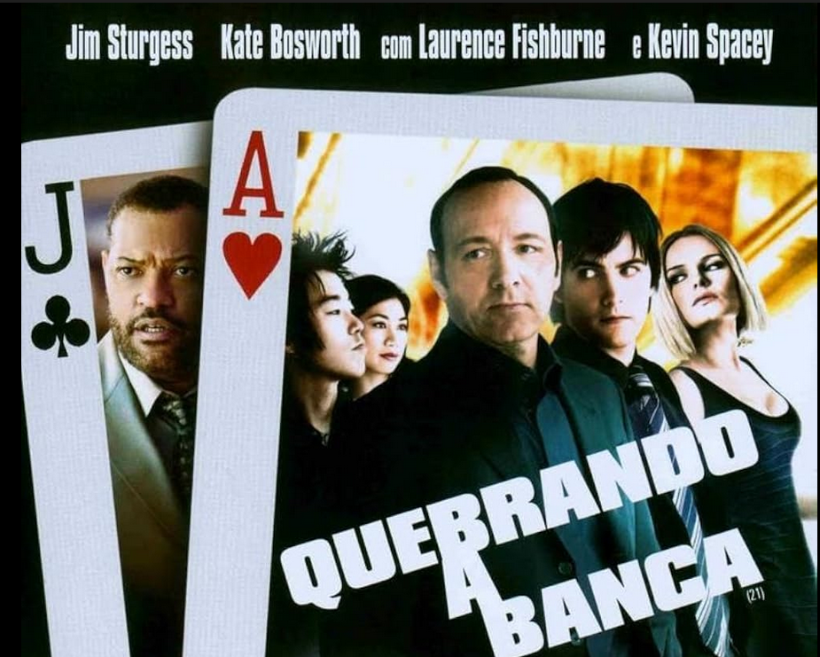
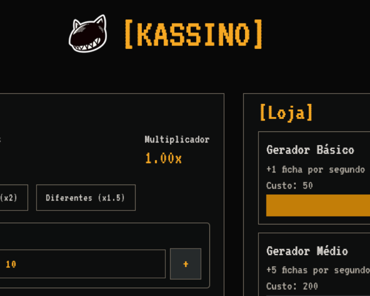

Matemática
Terceiro Ano - Ensino Médio

Quebrando a Banca
Após assistir o filme em sala, produzi um relatório sobre o mesmo. No documento, além de comentar sobre a mensagem do filme e sua trama, também conectei conceitos matemáticos à narrativa apresentada, bem como também apresentei uma sugestão de conteúdo matemático que poderia ser abordado em um roteiro de Hollywood hipotético. Foi uma atividade divertida de fazer, em especial por sua dinâmica menos convencional envolvendo assistir um filme, além de ter ajudado a reforçar os conceitos matemáticos aprendidos em sala.
C5 - H30, H31
C5 - Aplicar o pensamento probabilístico para quantificar e fazer previsões em situações aplicadas a diferentes áreas do conhecimento e da vida cotidiana.
H30 - Identificar dados, regularidades e relações numa situação que envolva o raciocínio combinatório, utilizando os processos de contagem.
H31 - Reconhecer fenômenos e eventos (naturais, científicos, tecnológicos e/ou sociais) de caráter aleatório, compreendendo o significado e a importância da probabilidade como meio de prever resultados.

Criando a Banca
Após realizar a atividade 'Quebrando a Banca', desenvolvi um jogo em grupo sobre os conceitos matemáticos abordados tanto no filme como em sala. O jogo é baseado em conceitos da teoria das probabilidades e análise combinatória, baseando-se no uso desses conceitos em jogos de azar, como no filme. Nosso jogo, Kassino, é um sistema de apostas baseado em eventos aleatórios, que faz com que o jogador tenha que tomar decisões estratégicas com base em probabilidades e análise combinatória. Para além da estrutura-base, também há um sistema de progressão baseado na compra de itens, para deixar o gameplay loop e o grind do jogo mais satisfatórios e envolventes. Foi um trabalho extremamente cativante de realizar, em especial por envolver a aplicação de conteúdos do curso técnico para a criação do jogo.
C5 - H30, H31
C5 - Aplicar o pensamento probabilístico para quantificar e fazer previsões em situações aplicadas a diferentes áreas do conhecimento e da vida cotidiana.
H30 - Identificar dados, regularidades e relações numa situação que envolva o raciocínio combinatório, utilizando os processos de contagem.
H31 - Reconhecer fenômenos e eventos (naturais, científicos, tecnológicos e/ou sociais) de caráter aleatório, compreendendo o significado e a importância da probabilidade como meio de prever resultados.